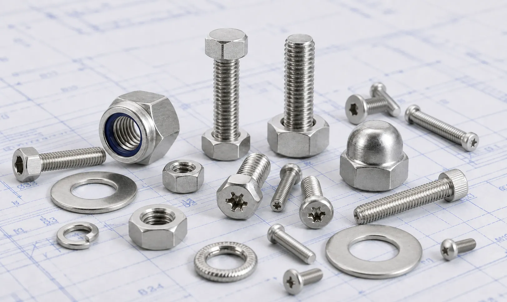

17-4 PH Stainless Steel Fasteners including bolts, nuts, stud bolts, washers, and anchor bolts for aerospace, power generation, petrochemical, marine engineering, and heavy machinery applications.
17-4 PH Stainless Steel Fasteners are high-strength precipitation-hardening stainless steel fasteners widely used in applications requiring excellent mechanical properties, corrosion resistance, and dimensional stability. Combining high tensile strength with good corrosion resistance, these fasteners are suitable for demanding industrial environments where conventional stainless steel grades may not provide sufficient strength. Gururaj Infradesigns is a trusted 17-4 PH Stainless Steel Fasteners Manufacturer in India, supplying reliable fastening solutions for aerospace, petrochemical, marine, and engineering applications.
Our product range includes hex bolts, stud bolts, anchor bolts, U bolts, hex nuts, washers, and socket head bolts manufactured to meet stringent industrial specifications and performance requirements.

17-4 PH Stainless Steel is a chromium-nickel-copper precipitation-hardening stainless steel known for its exceptional combination of strength, hardness, corrosion resistance, and toughness. Through heat treatment, the material can achieve significantly higher mechanical properties compared to conventional austenitic stainless steel grades.
As a specialized grade within the broader range of Stainless Steel Fasteners, 17-4 PH Fasteners are commonly selected for applications involving high loads, cyclic stress, and demanding service conditions where both strength and corrosion resistance are essential.
| Property | Details |
|---|---|
| Product | 17-4 PH Stainless Steel Fasteners |
| Grade | ASTM A564 Type 630 / UNS S17400 |
| Product Types | Hex Bolts, Stud Bolts, Anchor Bolts, U Bolts, Hex Nuts, Washers, Socket Head Bolts |
| Standards | ASTM, ASME, DIN, ISO |
| Sizes | M3 to M100 and Custom Sizes |
| Thread Type | Metric, UNC, UNF, BSW |
| Forms | Bolts, Nuts, Studs, Washers |
| Heat Treatment | H900, H1025, H1150 and Other Conditions |
| Certification | Mill Test Certificates Available |
We manufacture and supply hex bolts, socket head bolts, and U bolts in 17-4 PH stainless steel for applications requiring exceptional strength and wear resistance. These fasteners are widely used in aerospace, marine, petrochemical, and power generation industries.
Our 17-4 PH hex nuts are designed for high-strength fastening applications where reliability and durability are essential. They offer excellent mechanical performance while maintaining good corrosion resistance in industrial environments.
17-4 PH stud bolts are extensively used in valves, pumps, pressure vessels, and critical industrial systems. Their combination of high strength and corrosion resistance makes them suitable for demanding operating conditions.
We supply anchor bolts and washers for heavy-duty structural and equipment mounting applications. These components help ensure secure load transfer, vibration resistance, and dependable long-term fastening performance in industrial installations.
17-4 PH Stainless Steel Fasteners offer significantly higher strength compared to standard stainless steel grades. Their precipitation-hardening characteristics make them suitable for critical fastening applications subjected to heavy loads and stress.
These fasteners provide reliable corrosion resistance in atmospheric, marine, and industrial environments while maintaining excellent mechanical performance.
The heat-treated structure improves hardness and wear resistance, helping fasteners maintain performance in applications involving vibration, friction, and repeated loading.
17-4 PH stainless steel exhibits minimal distortion during heat treatment, making it suitable for precision components and critical fastening systems.
The material offers excellent mechanical properties without requiring excessive component size, making it beneficial for weight-sensitive engineering applications.
| Element | Percentage (%) |
|---|---|
| Chromium | 15.0 – 17.5 |
| Nickel | 3.0 – 5.0 |
| Copper | 3.0 – 5.0 |
| Manganese | Max 1.0 |
| Silicon | Max 1.0 |
| Carbon | Max 0.07 |
| Phosphorus | Max 0.04 |
| Sulfur | Max 0.03 |
| Niobium + Tantalum | 0.15 – 0.45 |
| Property | Typical Value |
|---|---|
| Tensile Strength | Up to 1310 MPa |
| Yield Strength | Up to 1170 MPa |
| Elongation | 10 – 15% |
| Hardness | Up to 44 HRC |
| Density | 7.75 g/cm³ |
17-4 PH Stainless Steel Fasteners are widely used in aerospace structures, aircraft components, and support systems where high strength, low weight, and reliable performance are critical.
These fasteners are utilized in valves, pumps, pressure vessels, and processing equipment that operate under demanding mechanical and environmental conditions.
The combination of strength and corrosion resistance makes them suitable for marine equipment, offshore systems, and coastal infrastructure exposed to moisture and harsh environments.
Power plants and energy facilities use 17-4 PH fasteners in turbines, generators, and critical assemblies requiring high mechanical strength and reliability.
Heavy engineering and manufacturing industries utilize these fasteners in equipment and machinery exposed to dynamic loads, vibration, and repetitive stress.
| Grade | Key Characteristics | Typical Applications |
|---|---|---|
| SS 304 & 304L | General corrosion resistance | Fabrication, Food Processing |
| SS 316 & 316L | Enhanced chloride resistance | Marine, Chemical Processing |
| 17-4 PH | High strength and hardness | Aerospace, Power Generation |
17-4 PH Stainless Steel Fasteners are primarily selected for applications requiring significantly higher strength and hardness than conventional stainless steel grades. While Stainless Steel 304 Fasteners are commonly used for general industrial applications and Stainless Steel 316 Fasteners for enhanced corrosion resistance, 17-4 PH offers a unique balance of mechanical strength and corrosion resistance for critical engineering applications.
| Industry | Reason for Selection |
|---|---|
| Aerospace | High strength-to-weight ratio |
| Power Generation | Mechanical reliability |
| Petrochemical | Strength and corrosion resistance |
| Marine Engineering | Durability in harsh environments |
| Heavy Machinery | Resistance to dynamic loading |
17-4 PH Stainless Steel Fasteners are widely specified where conventional stainless steel grades may not provide sufficient mechanical strength. Their combination of hardness, toughness, and corrosion resistance makes them suitable for critical industrial applications.
Gururaj Infradesigns supplies 17-4 PH Stainless Steel Fasteners in various sizes, thread forms, and specifications to support demanding industrial fastening requirements. Our products are used across aerospace, power generation, marine engineering, petrochemical, and heavy manufacturing sectors where performance and reliability are essential.
As a trusted supplier, we support EPC contractors, OEM manufacturers, engineering companies, and industrial buyers with dependable fastening solutions backed by technical support, consistent quality, and timely delivery.
Quality remains an important part of our manufacturing and supply process. All 17-4 PH Stainless Steel Fasteners undergo inspection for dimensional accuracy, thread quality, material integrity, and compliance with applicable standards to ensure reliable performance in service.
As an ISO Certified Company, we are committed to maintaining consistent quality standards and supplying dependable fastening solutions for industrial and engineering applications.
Selecting the correct fastener material depends on factors such as mechanical load requirements, operating conditions, corrosion exposure, and service environment. Choosing the right grade helps improve equipment reliability, safety, and long-term performance. Our team can assist in selecting the appropriate fastener grade, size, thread type, and specification based on your project requirements. We support EPC contractors, OEM manufacturers, engineering firms, and industrial buyers with dependable fastening solutions for critical applications.